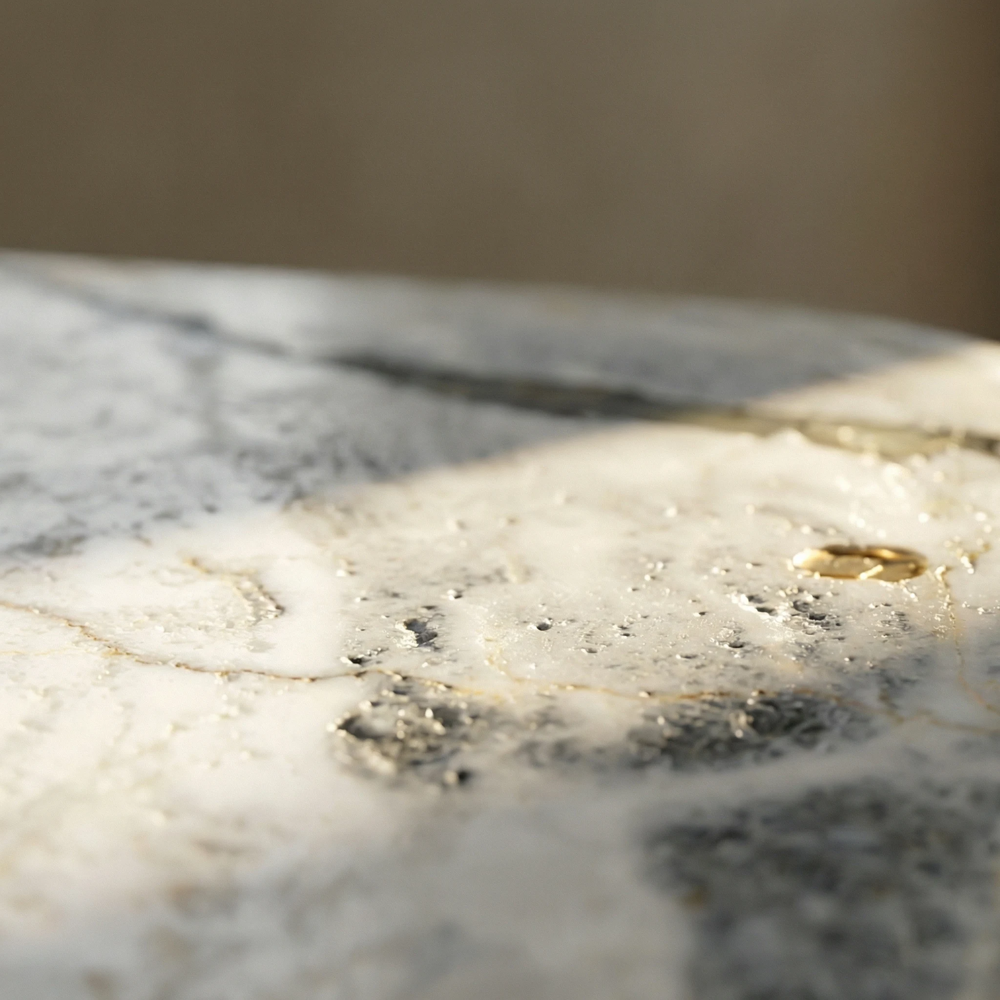
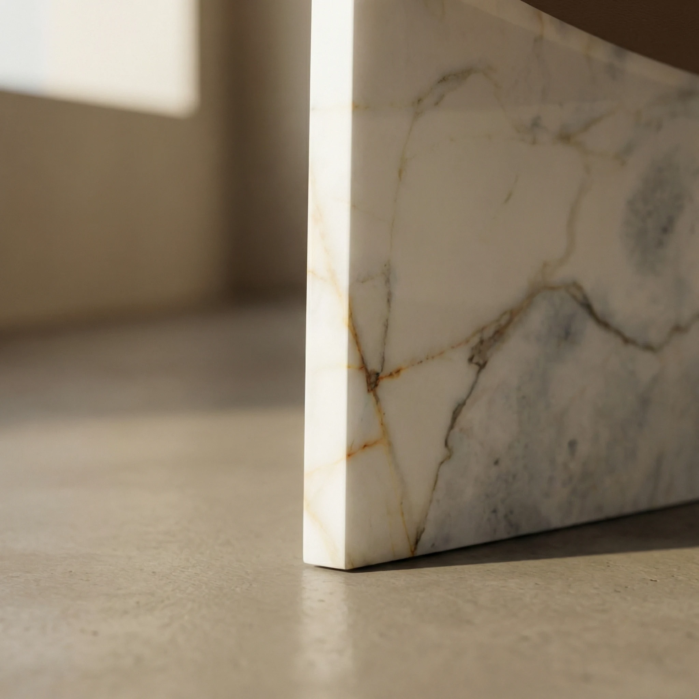

Marble Accent Chair
bespoke marble seating
Two marble monoliths. A leather sling. A brass rod. Ana asks how far stone can go — a chair that is first a monument, and then a seat. Arabescato Vagli marble, quarried for its dramatic diagonal veining, forms the structural panels. Everything else follows from them.
Request a Quote




Ana begins with two monoliths. Each panel is cut from a single marble slab — the same stone, chosen so that left and right tell one continuous geological story. The panels are not supports for a seat. They are the chair. The leather sling simply makes it human.
Commission Yours →Natural vegetable-tanned leather, left uncoloured to preserve its raw warmth, is suspended between the panels by solid brass rods. As the leather ages, it darkens where hands rest, lightens where the sun reaches, and acquires the particular character of use. The marble does the opposite — holding its appearance with geological patience.
Discover Our Craft →

Ana is offered in Calacatta Viola, Fendy Grey, Ice Age Onyx, Noir Aziza, Rosso Levanto, and Verde Patricia. Each stone brings its own character — from the dramatic veining of Calacatta Viola to the deep silence of Noir Aziza.
Calacatta Viola
 Calacatta Viola
Calacatta Viola
 Fendy Grey
Fendy Grey
 Ice Age Onyx
Ice Age Onyx
 Noir Aziza
Noir Aziza
 Rosso Levanto
Rosso Levanto
 Verde Patricia
Verde Patricia

| Dimensions | 60 × 50 × 70 cm |
| Seat Height | Approx. 420 mm |
| Weight | Approx. 100 kg |
| Marble | Arabescato Vagli (shown); alternate selections available on inquiry |
| Marble Finish | Honed (standard); polished on request |
| Leather | Natural vegetable-tanned saddle leather; alternate leathers on request |
| Hardware | Solid brass rods and fixings |
| Custom Sizing | Available on request |
The leather sling, once broken in, conforms naturally to the body. Ana is low and deliberate — a contemplative chair rather than an ergonomic workstation. Many clients place it as a reading chair, a study accent, or a sculptural seat in an entrance or dressing room. It is comfortable in the way all well-considered furniture is: with intention.
The leather sling is looped around solid brass rods that pass through precisely drilled apertures in both marble panels. The rods are secured with flush brass fixings on each external face. The system is designed to allow the leather to be removed and replaced without disturbing the marble panels — the stone and hardware remain permanently in place.
Yes. The leather sling is designed as a replaceable component. We offer a re-leathering service and supply replacement slings to clients who prefer to install themselves. The natural ageing of the leather is intentional — many clients embrace its patina as part of the piece's evolving character. Alternate leathers, including darker or fuller-grain options, are available on inquiry.
The marble panels are sealed before delivery. Routine care requires only a dry or lightly damp cloth; avoid acidic or abrasive cleaners, which can dull the honed surface over time. Given Ana's use as occasional seating, the marble surfaces receive minimal exposure to liquids. A full care guide accompanies every piece detailing seasonal maintenance and re-sealing recommendations.

Each Ana begins with the selection of marble — stone chosen for the particular character of its veining, cut so that both panels speak with one voice. Inquire to begin a conversation about stone selection, leather finish, and the specific presence of your piece.